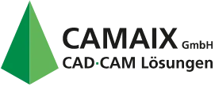
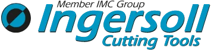
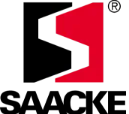
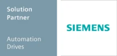
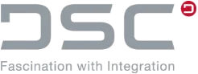

Okos együttműködés
A ZOLLER partnereivel együttműködve törekszik az ügyfelek igényeinek optimális kielégítésére.
ANCA
Az ANCA piacvezető a kiváló minőségű CNC-csiszológépek és CNC-rendszerek területén. A vállalat folyamatosan fejlődik; ez az innováción és a technológián alapuló vállalati stratégiának, valamint annak az elszántságnak köszönhető, hogy olyan gépeket gyártson, amelyek kielégítik ügyfeleink igényeit és túlteljesítik elvárásaikat.
A ZOLLER interfészt kínál az ANCA szerszámcsiszológépekhez.
A+B Solutions Kft.
Több mint 35 éves tapasztalatával az A+B Solutions átfogó szakértelemmel rendelkezik a gyártás nyomon követésére és vezérlésére szolgáló megoldások tervezése és integrálása terén. Az olyan vezető szállítók, mint a Siemens PLM Software megoldáspartnereként az A+B Solutions teljes körű megoldásokat kínál ügyfeleinek: a tanácsadástól kezdve a tervezésen és a projektkivitelezésen át egészen a rendszerintegrációig és a szervizelésig.
Az A+B Solutions megoldásai számos alkalmazáshoz biztosítanak interfészt, és minden fejlesztési, megrendelési és gyártási adat központi csomópontjaként egységes és átfogó adatstruktúrát hoznak létre. Az A+B Solutions a ZOLLER fejlesztési partnere a rendszereink Siemens NX és Teamcenter rendszerekhez való csatlakoztatásában.
Balluff
Több mint 50 éves érzékelőgyártási tapasztalatával a Balluff GmbH ma az ipari automatizálás területén az egyik leghatékonyabb és világszerte vezető érzékelőtechnológiai gyártó. Kifinomult technológia és a legmodernebb elektronika – saját, tanúsított laboratóriumunkban alaposan tesztelve –, alkalmazásspecifikus ügyfélmegoldások, valamint személyre szabott tanácsadás és első osztályú szolgáltatás jellemzik a Stuttgart melletti Neuhausen a.d.F.-ben székhellyel rendelkező vállalatot. Mindezt 2050 munkatársunk biztosítja itthon és külföldön egyaránt.
A Balluff és a ZOLLER a szerszámkódolás és a szerszámazonosítás révén együttműködik a szerszámadatok átvitelének területén.
Camaix Kft.
A Camaix cég formagyártás, gépgyártás és járműgyártás területén nyújt szolgáltatásokat, és különösen az elmúlt években az űrhajózási technológiával, valamint a komplex 5- és 6-tengelyes megmunkálással foglalkozott, és ehhez speciális megoldásokat fejlesztett ki.
A ZOLLER szerszámkezelő rendszerhez tartozó, egyszerűen és intuitív módon kezelhető Mastercam-felület lehetővé teszi, hogy a Mastercam programban az összeszerelt szerszámok aktuális geometriájával programozzunk, és az adatokat szimulációhoz és ütközésellenőrzéshez használjuk fel.

Camtek Kft.
A stuttgarti Weinstadtban található Camtek GmbH-t 1993-ban alapították a PEPS CAD/CAM-rendszer kizárólagos forgalmazójaként. Neves gép- és vezérlőgyártókkal szoros együttműködésben fejlesztik a kiváló minőségű utómunkáló programokat, és folyamatosan tökéletesítik a két rendszert.
A ZOLLER kényelmes és egyszerűen kezelhető interfészt kínál a PEPS CAD/CAM rendszerhez.
Delcam
A Delcam világszerte az egyik vezető fejlesztője és forgalmazója a gyártóipar számára készült modern CAD/CAM, valamint eszközfüggetlen 3D mérőszoftvereknek. Ma a Delcam az Egyesült Királyság legnagyobb CAD/CAM-szoftverfejlesztője, és fióktelepekkel rendelkezik Észak-Amerikában, Európában és Ázsiában. A Delcam termékeit több mint 80 országban, több mint 50 000 vállalat használja. A Delcam termékei között megtalálható többek között a világszerte vezető CAM-szoftver, a PowerMILL. A PowerMILL és a ZOLLER TMS Tool
Management Solutions közötti interfészen keresztül kényelmesen hozzáférhet a kiterjedt ZOLLER-adatbázishoz.
DP Technology
A DP Technology a számítógépes gyártást támogató (CAM) szoftverek egyik vezető gyártója és szállítója a gyártóipar széles körében. Az ESPRIT, a DP Technology fő terméke, egy rendkívül nagy teljesítményű és kiváló minőségű NC-programozó rendszer maráshoz, fúráshoz, esztergáláshoz, szikraforgácsoláshoz, valamint olyan multifunkciós gépekhez is, mint például a maró-esztergáló központok.
A ZOLLER TMS szerszámkezelési megoldásokhoz tartozó, egyszerűen és intuitív módon kezelhető ESPRIT CAM felület lehetővé teszi a szerszámadatok egyszerű cseréjét.
Virtuális Gibbs
A Virtual Gibbs egy nagy teljesítményű, rugalmas CAM-szoftver, amely jelentősen leegyszerűsíti a CNC-programozást. A felhasználóbarát felület növeli a termelékenységet, így ideális választás CNC-programozók, megmunkáló szakemberek és mérnökök számára. A 2D-től az 5 tengelyes marásig, esztergálásig, MTM-ig és szikraforgácsolásig terjedő támogatással a Virtual Gibbs gyors és megbízható programozást tesz lehetővé. A Virtual Gibbs a vezető CAM-megoldás komplex, többcsatornás megmunkáló központok programozásához. A Virtual Gibbs ZOLLER-interfészének köszönhetően a szerszámok központilag és egyszerre kerülnek létrehozásra, ami biztosítja a hatékonyságot és a konzisztenciát.
Hermle
A Hermle megmunkáló központok szerszámok, formák és sorozatgyártott alkatrészek hatékony megmunkálására szolgálnak. Minőségüknek és nagy pontosságuknak köszönhetően számtalan gyártási területen alkalmazzák őket, különösen olyan igényes iparágakban, mint az orvostechnika, az optikai ipar, a repülőgép- és autóipar, a szerszám- és formagyártás, valamint ezek beszállítói.
A ZOLLER beállító és mérőműszerek opcionálisan rendelkeznek interfésszel a Hermle megmunkáló központokhoz.
Ingersoll
Az Ingersoll forgácsoláshoz használt, cserélhető lapokkal felszerelt szabványos és egyedi szerszámokat fejleszt és gyárt. A szerszámokat világszerte használják, többek között az autóiparban és a gépgyártásban. A standard program mellett az Ingersoll az ügyfelei igényeinek megfelelően igényes megoldásokat is fejleszt és tervez.
A ZOLLER az Ingersoll-lal együttműködve többek között egy újszerű koncepciót fejlesztett ki a cserélhető lapokkal felszerelt hengerlő- és fogformázó marók műhelyben történő ellenőrzésére és mérésére.

KOMET CERATIZIT CSOPORT
Innovatív szerszámkoncepcióival és a furatmegmunkáláshoz kínált átfogó megoldásaival a KOMET CERATIZIT GROUP világszerte technológiai vezetőnek számít. A KOMET ügyfelei különösen nagyra értékelik a jövőbe mutató szolgáltatásokat, az egyedülálló műszaki támogatást, a gyakorlatias szakmai szemináriumokat, valamint a fúráshoz, dörzsárazáshoz és menetvágáshoz kínált prémium minőségű szerszámokat.
A ZOLLER megoldásokat kínál a KOMET CERATIZIT GROUP szerszámainak beállításához és méréséhez.
KROMI
A KROMI Logistik AG a hazai és külföldi gyártóvállalatok számára a precíziós szerszámok beszerzésének teljes körű kiszervezését kínálja. A hangsúly a fém- és műanyagmegmunkáláshoz szükséges, műszakilag igényes marószerszámokon van.
A TMS Tool Management Solutions SILVER csomag magában foglalja a KROMI-hoz való csatlakozási felületet.
MAKINO
A MAKINO a szerszámgépipar egyik vezető technológiai és szolgáltatójaként ismert. Termékpalettája magában foglalja az alkatrészgyártáshoz, valamint a szerszám- és formagyártáshoz szükséges megmunkáló központokat, amelyek széles körű alkalmazási területekkel rendelkeznek a repülőgép- és űrhajózási ipar, az autóipar, a mezőgazdasági és építőipari gépek, az általános gépgyártás és a mikrotechnológia területén.
A ZOLLER beállító és mérőműszerei opcionálisan rendelkeznek interfésszel a MAKINO megmunkáló központokhoz.
moldtech Kft.
A CAD/CAM – TopSolid termékcsalád alapján a MOLDTECH megoldásokat kínál a megmunkálóipar számára. A TopSolid termékcsaládhoz kapcsolódó szolgáltatásokkal a Moldtech segíti a felhasználókat abban, hogy a tervezés és a gyártás során felmerülő igényes feladatokat gyorsabban és hatékonyabban oldják meg.
A ZOLLER szerszámkezelő rendszerhez kapcsolódó, egyszerűen és intuitív módon kezelhető TopSolid‘Cam interfész lehetővé teszi, hogy a TopSolid‘Cam programban az összeszerelt szerszámok aktuális geometriáival programozzon, és az adatokat szimulációhoz és ütközésellenőrzéshez használja fel.
MTS Rt.
Az MTS AG világszerte fejleszt és forgalmaz szoftvereket CNC-csiszológépekhez. A „tool-kit PROFESSIONAL” termék világszerte elismert szoftver a szakemberek számára egyszerűtől a komplex munkadarabok gyártásához és utóélezéséhez.
A ZOLLER beállító és mérőműszerei interfészt biztosítanak az MTS szoftvermegoldásával felszerelt szerszámcsiszológépekhez.
NUM
A NUM CNC-vezérlőket és azokhoz illeszkedő szoftvermegoldásokat gyárt. A szerszámcsiszolás területén a NUM a NUMROTOplus szoftverrel piacvezető.
A ZOLLER beállító és mérőműszerei interfészt biztosítanak a NUMROTOplus szoftverrel felszerelt szerszámcsiszoló gépekhez.
Okuma
Az Okuma innovatív szerszámgépek vezető gyártója, széles és lenyűgöző termékválasztékkal. Ez magában foglalja a rendkívül pontos és robusztus NC-esztergákat, a multifunkciós gépeket és a kiváló OSP-vezérléssel felszerelt megmunkáló központokat.
A ZOLLER beállító és mérőműszerei opcionálisan interfészt kínálnak az Okuma szerszámgépekhez.
Nyitott gondolkodás
Az OPEN MIND Technologies AG innovatív CAM/CAD-megoldásokat fejleszt és forgalmaz, amelyek digitális modellek alapján optimális NC-maró- és esztergálási programokat generálnak szerszámgépekhez. A legkülönbözőbb iparágak gyártói világszerte az OPEN MIND termékek mellett döntenek, mert azok segítségével gazdaságosan és hatékonyan tudnak gyártani. Így lenyűgöző minőségű modellek, prototípusok, szerszámok, formák, prizmás munkadarabok, integrált alkatrészek és még sok más készül el.
A ZOLLER TMS Tool Management Solutions rendszerhez kapcsolódó hyperMILL® interfészen keresztül kényelmesen hozzáférhet a kiterjedt ZOLLER adatbázishoz.
OPUS
Az OPUS® több mint 30 éve nyújt feladatorientált megoldásokat a CAM, MDE és DNC területeken. A közel 1000 vállalatnál végrehajtott, jóval több mint 4000 telepítés önmagáért beszél. Az OPUS®-t pontosan a gyártási követelményekhez igazítják, és a felhasználókkal közösen fejlesztik tovább.
A ZOLLER TMS Tool Management Solutions rendszerhez kapcsolódó, egyszerűen és intuitív módon kezelhető OPUS interfész lehetővé teszi az adatok egyszerű átvitelét a ZOLLER adatbázis és az OPUS CAM-rendszer között.
zsákok
A Saacke, egy több mint 100 éves hagyományokkal rendelkező innovatív családi vállalkozás, világszerte irányadó szerepet tölt be a szerszámélező gépek, valamint a fogazó- és profilozó szerszámok területén.
A ZOLLER beállító és mérőműszerei opcionálisan interfészt kínálnak a Saacke szerszámélező gépekhez.

Siemens Industry Software Kft.
A Siemens PLM Software, a Siemens Digital Factory divízió egyik üzleti egysége, a termékéletciklus-kezelés (PLM) és a gyártási folyamatok kezelése (MOM) területén világszerte vezető szoftver-, rendszer- és szolgáltatásszolgáltató, több mint 15 millió licencelt felhasználóval és világszerte több mint 140 000 ügyféllel.
A ZOLLER, mint a Siemens Software & Technology Partner, interfészeket kínál a Siemens Teamcenterhez a tervezett és tényleges adatok átvitelére a ZOLLER beállító, mérő és ellenőrző készülékéről a szerszámgépre, valamint a Siemens NX termékfejlesztési és gyártási integrált szoftvercsomaghoz a TMS Tool Management Solutions-szel való biztonságos adatcseréhez a ZOLLER z.One szerszámadatbázison keresztül.

SOFLEX
A SOFLEX vezette be az első rugalmas gyártási rendszereket Németországban, és a Stuttgarti Egyetem spin-off vállalkozásaként a kezdetektől fogva jelen van ebben az izgalmas és kihívásokkal teli iparágban. 1984 óta a vezérlőrendszerek, beleértve a cellák és a gyártás irányítását, jelentik a vállalat alapvető kompetenciáját. A SOFLEX értékes impulzusokat kap egy széles körű egyetemi és felsőoktatási hálózattól.
A ZOLLER beállító és mérőberendezés tartalmaz egy interfészt a SOFLEX-hez, így a tervezési megbízások átkerülnek a ZOLLER berendezésre. Ezenkívül a beállító és mérőberendezés a ZOLLER-SOFLEX-PCS interfészen keresztül teljesen automatikusan lekérdezi a szerszámigény-listát. A ZOLLER beállító és mérőberendezésen végzett beállítás után a mért adatok közvetlenül továbbításra kerülnek a SOFLEX-PCS rendszerbe, majd a SOFLEX-PCS a szerszám betöltésekor továbbítja a szerszámadatokat a gépnek.
SolidCAM Kft.
A SolidCAM a világ egyik vezető integrált CAD/CAM-rendszer-szolgáltatója, amely hatékony CAM-programozást biztosít a gépiparban, az elektronikai, orvosi, fogyasztási cikkek, géptervezés, autóipar és repülőgépipar területén, valamint a formák és szerszámok gyártásában. A SolidCAM SolidCAM és InventorCAM termékeivel zökkenőmentes integrációt kínál a SolidWorks és az Autodesk Inventor szoftverekbe. A forradalmian új, szabadalmaztatott iMachining technológiával és a SolidCAM MillTurn plus szoftverrel a szoftver a CNC-alkalmazások teljes skáláját támogatja, egészen a komplex eszterga-maró központokig és hosszú esztergákig.
Több mint 75 munkatárs nyolc telephelyen és három technológiai központban biztosítja a kompetens felhasználói támogatást és az első osztályú helyszíni műszaki szolgáltatást az egész ország területén.
A ZOLLER szerszámkezeléshez tartozó, egyszerűen és intuitív módon kezelhető SolidCAM felület a TMS Tool Management Solutions segítségével kényelmes hozzáférést biztosít a kiterjedt ZOLLER szerszámadatbázishoz. A maráshoz, esztergáláshoz és esztergálás-maráshoz szükséges komplett szerszámok 3D szerszámadatokként közvetlenül a SolidCAM-ban használhatók szimulációhoz és ütközésellenőrzéshez.
Takisawa Machine Tool Co. Ltd.
A szerszámgépgyártó 1922-es alapítása óta a TAKISAWA úttörő szellemiségével és szenvedélyével nyeri meg a felhasználókat. Hatalmas tapasztalati tőkéjével és közel 100 éves hagyományával a TAKISAWA ma számos innovatív és technológiailag fejlett terméket kínál.
A ZOLLER interfészt biztosít a szerszámadatok TAKISAWA-hoz történő átviteléhez.
Tebis AG
A Tebis AG a CAD/CAM és MES terület globális piac- és technológiai vezetőjei közé tartozik. A Tebis szoftverek segítségével az ügyfelek hatékonyan, biztonságosan és kiváló minőségben terveznek, szerveznek és gyártanak magas színvonalú modelleket, formázó szerszámokat és alkatrészeket. A gyakorlati tapasztalattal rendelkező tanácsadói és implementációs szakértőkből álló csapatok stratégiákat dolgoznak ki a hatékony és biztonságos CAD/CAM-folyamatokhoz, ezeket megvalósítják az ügyfeleknél, és így biztosítják a tartós technológiai és versenyelőnyt. A München közelében, Martinsriedben székhellyel rendelkező vállalat világszerte 9 Tebis-fióktelepet, valamint további 8 országban kereskedelmi képviseleteket tart fenn. Az automatizálás több mint 30 éve a Tebis sikerének titka. Ügyfelei számára a Tebis az Ipar 4.0 felé vezető út úttörőjeként tekinti magát.
A ZOLLER TMS Tool Management Solutions rendszerhez kapcsolódó, egyszerűen és intuitív módon kezelhető Tebis interfész lehetővé teszi a szerszámadatok és beállítási lapok – beleértve az egyes alkatrészeket és a komplett szerszámokat is – egyszerű átvitelét a ZOLLER z.One szerszámadatbázis és a Tebis CAM-rendszer között.
Vollmer
A 14 telephellyel rendelkező Vollmer Csoport széles körű gépparkjával világszerte sikeresen működik a gyártásban és a szervizelésben a szerszámmegmunkálás szakértőjeként. A technológiai piacvezető termékpalettája a fa- és fémfeldolgozó ipar számára a legmodernebb csiszoló-, szikraforgácsoló és megmunkáló gépeket, valamint kör- és szalagfűrészeket tartalmaz.
ZOLLER beállító és mérőműszerek – tökéletes hálózati összeköttetés a Vollmer csiszológépekhez.
A DSC Software AG-ról
A TÁRSAD INTEGRÁLT PLM-MEGOLDÁSOK TERÉN
Mi, a DSC Software AG-nál szenvedélyesen dolgozunk azon, hogy összehozzuk az embereket, a folyamatokat és a rendszereket. Szívünk az Ön termékadataiért dobog.
Hadd ragadjon magával az integráció iránti lelkesedésünk! Innovatív, emberközpontú és partneri szellemben kísérjük Önt digitális stratégiájának konkrét megvalósításában: az SAP-t használjuk üzleti folyamatai központi digitális adatbázisaként, amelyet pontosan illeszkedő, bevált gyakorlatokon alapuló megoldások egészítenek ki.
Hosszú évek óta tartó SAP-partnerként kiváló hálózattal rendelkező és tapasztalt társra lelhet mellettünk. A DSC csapata összesen több mint 1100 évnyi PLM-szakértelemmel rendelkezik, és egyetlen célja van: a legjobb megoldást kidolgozni az Ön egyedi kihívásaira. Hogy zseniális ötleteit még gyorsabban okos termékekké alakíthassa, és jövőbiztos maradjon.
